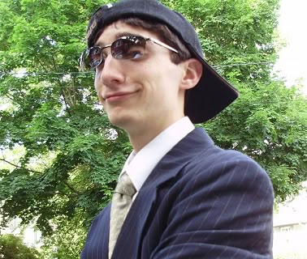

Robert F. "Toby" Fox (Manchester, Nova Hampshire, 11 de outubro de 1991),
também conhecido como "Radiation" e FwugRadiation é um desenvolvedor e compositor
americano de videogames. Ele é conhecido por desenvolver os videogames de RPG Undertale
e Deltarune, pelos quais o primeiro foi aclamado e recebeu indicações para o British Academy
Game Award, três Game Awards e D.I.C.E. Awards.